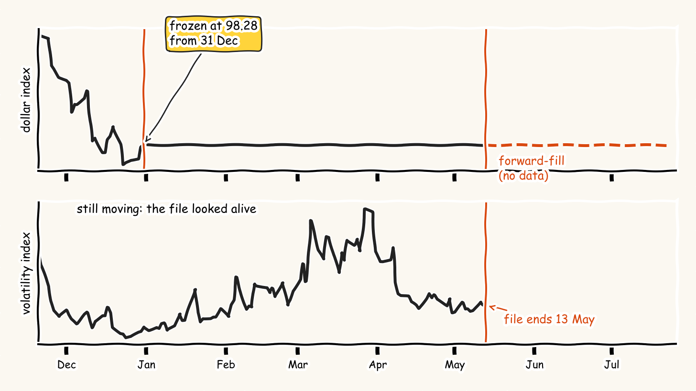
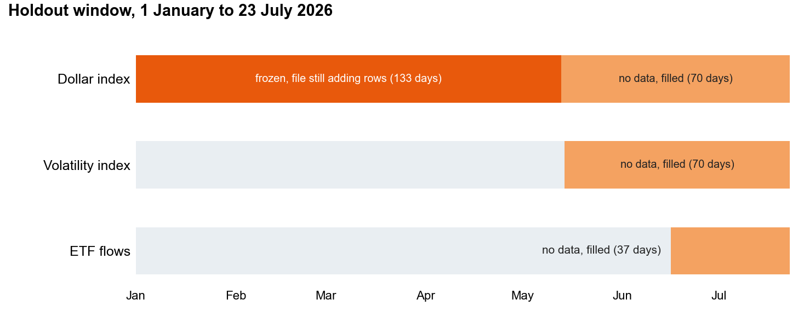
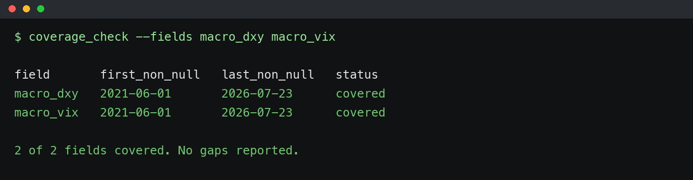

One column sat at 98.28 for 203 days. Nothing complained.
This is the second post in Rookie Mistakes, the series on mistakes we made early in our alpha research. The first covered a backtest that could see the future. This one is about trusting data because nothing complained.
The mistake is treating a value that is present as a value that is current. It hid in our data for months, and it hid well, because every check we had asked only whether a value was there.
![On 31 December 2025 the US dollar index in one of our data files stopped changing. It read 98.28 that day and 98.28 on every row after it for 133 days, while the file kept adding a row every business day. On 13 May 2026 the file ended. A forward-fill carried the same 98.28 to the end of our data grid on 23 July. That is 203 days, and it covered our entire 2026 holdout window. A volatility index in the same file kept moving until the day the file ended, so it looked alive. Every check I had asked one question: is there a value? There was. Nothing errored.](008-zombie-feed/v2-wrap.png)
I call this the zombie feed problem: a series that looks alive to every check that only asks whether a value is present.
What the checks asked
Our coverage manifest recorded the first and last non-null timestamp for each field. For the dollar index that ran from 2021 to 23 July 2026, a clean bill of health. Forward-fill makes it worse because it manufactures present values. Once a vendor stops, the last number rides along to the end of the grid.

The raw dollar index and volatility index from 20 November to the end of the grid.
The fill existed twice. The local data merge had it, and so did the shim that the hosted backtest service runs. The shim re-implements the same alignment rule so a factor sees the same numbers in both places. Real backtests go through the hosted path, so fixing only the local copy would have fixed nothing that mattered.
The first fix: a bound on time
I bounded the fill by time since the last real observation, not by a row count. A row-count limit breaks on business-day feeds, where the number of bars per calendar day changes with every weekend and holiday. Each feed got a horizon sized to how often it publishes: five days for the macro series, three for stablecoin supply, two for the per-asset feeds. These are our choices, not vendor guarantees. The same bound closes a gap in the middle of a series, and a feed that resumes un-stales itself.
Publication lag got the same care. For the macro feed I assumed values arrive one business day late, so a Friday value shows up on Monday, and a fixed one-calendar-day shift would let Saturday see it. A fixed lag also doesn't deal with revisions: a vendor can change a value after first publishing it, and a backtest only sees what the file holds today.
The fix that didn't fix itself
The bound measured age from the last row that wasn't null, and the dollar index never stopped producing rows. For 133 of its 203 days the feed was still adding rows, so the bound saw a live series and never fired. Only the last 70 days, when the file really ended, were caught.
The second version counts a row as fresh only if its value differs from the previous fresh observation. That is a detector, not a definition. A vendor that repeats a true value looks stale to it, and a stale value with a little noise would look fresh. A publication time from the source would be better where one exists. I switched it on per column and checked it against the real file before trusting it. It masked 12,768 extra rows, which is exactly 133.0 days at 96 bars a day. The first masked timestamp was 6 January: the freeze date, plus one business day of lag, plus the five-day horizon. The rule fired at the onset I had predicted from arithmetic, which is a better test than a green unit test.

How long each series was stale across the holdout window.
I left it off the per-asset columns. A funding rate on an illiquid coin is legitimately flat for long stretches, and the same rule would have raised the false-flag rate about forty-three times. A detector that flags healthy columns trains people to ignore the next alarm.
Did it reach a result
The harder question was whether any number we had quoted used the frozen column. The holdout ran from 1 January to 23 July, so the dollar index was constant across all of it, and the volatility index and ETF flows went stale over its last ten and five weeks. I traced which columns the code reads instead of trusting the strategy notes. The notes omitted factors the code used (one composite listed three in its notes and four in its code). Every strategy file also listed all four columns as boilerplate for what the engine could supply, which would have made everything look exposed.
Not one factor in the library read the dollar index. The volatility index was read by four of seventeen books, and it only went stale in mid-May, months after the window behind our headline result ended. The two windows shared a single bar, 1 January 2026, and on that bar the only column those books read was still moving. The ETF flow columns went stale later still, in June, so they could not reach that window either. The number stood. That rests on tracing which columns the code reads, which found no exposure. It is not a re-run on repaired data, and the 2026 holdout stays flagged until that re-run is done.
Two more ways a feed lies
Missing rows hide from a null count. For one April, every symbol was missing 937 of its 2,880 fifteen-minute bars, in two blocks of about five and four days, in our files and in the API. I counted NaNs, found none, and wrote "clean". Those rows were absent, so a null count had nothing to count. The engine only trades a symbol with an unbroken run of recent bars, so each hole disqualified coins for the months after it.

What the coverage check reported.
Units fail quietly too. A refresh from the data API returned a hashrate series about a trillion times off, and a stablecoin series 650 times larger and anti-correlated with the one we had curated. Re-downloading didn't fix it. The values were stable across refreshes, just wrong.
What we do now
Where a feed gives no publication time, freshness is a check on the value, not on the row, and a long run of identical values is a warning sign, not proof. A column where change is expected gets a value-change clock, and everything else gets a time-since-last-observation bound. A column that should stay unbounded has to say so. An unconfigured column now raises an error, because a silent default to unbounded was the same bug found independently three times. After each collection run, the stored bar count is compared with the expected count.
One part stays open. We probed all five per-asset feed endpoints and none returns a source or freshness field, so on those we can't tell a vendor fill from a real print.